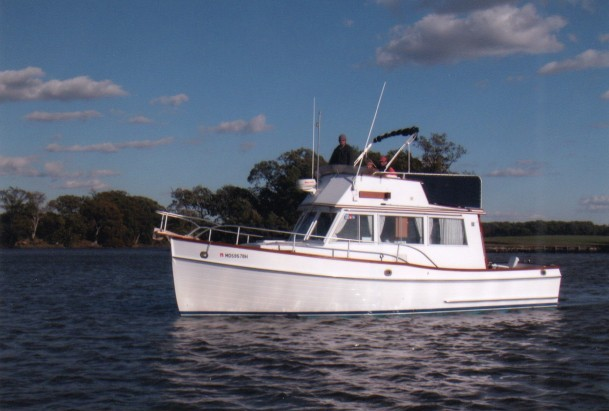

Grand Banks 32 Sedan
1965–1995
The Grand Banks 32 Classic is a compact flybridge sedan cruiser with a semi-displacement hull, a single-level salon and one forward cabin. Most examples use single diesel shaft propulsion, although machinery and tank arrangements vary across the long production run. It offers traditional Grand Banks construction and deck access in a size suited to couples and smaller cruising crews.

- Length
- 31.92 ft
- Beam
- 11.5 ft
- Draft
- 3.75 ft
- Hull behaviour
- Semi-Displacement
- Fuel
- Diesel
- Propulsion
- Shaft
- Engine configuration
- Single Inboard
- Boat family
- Trawler
- Construction
- Philippine mahogany through 1973; fiberglass thereafter
Best for
- Couples cruising at displacement speeds
- Buyers seeking a compact traditional flybridge cruiser
- Owners comfortable maintaining an older teak-rich boat
Trade-offs
- Machinery access is tighter than on larger Grand Banks models
- Exterior teak and older systems can require substantial upkeep
- One-cabin layout limits privacy for guests
- Motion can be more noticeable than on larger, heavier models
Known concerns
- No model-specific concern has been promoted to B-Atlas’s evidence threshold. This does not mean the model has no age-, condition- or hull-specific risks.
Inspection focus
- Confirm whether the hull and superstructure are wood or fiberglass and survey accordingly
- Inspect teak decks, deck fittings, windows and cabin sides for moisture intrusion
- Inspect fuel tanks, exhaust components and accumulated electrical modifications
- Evaluate machinery access before accepting the engine and service arrangement
Continue researching
Related boat models
36.83 ft · Semi-Displacement
36.83 ft · Semi-Displacement
42.58 ft · Semi-Displacement
31.92 ft · Semi-Displacement
32.33 ft · Semi-Displacement
32.42 ft · Semi-Displacement
About this record
B-Atlas preserves uncertainty: missing information remains unknown rather than being treated as a negative. Specifications and guidance describe the model record; individual boats can differ by year, equipment, refit and condition.